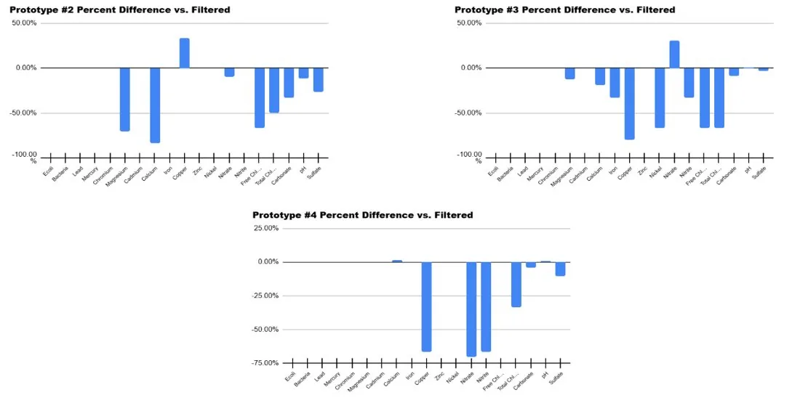
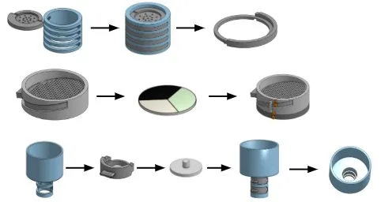

Low-cost water purification device
| Type | Science fair project — earlier work |
|---|---|
| With | Dayul Lee |
| Dates | 2024 |
After watching my uncle drink turbid well water on a visit to family in India, Dayul Lee and I built a filtration device aimed at being effective enough to matter and cheap enough to actually reach the people who need it.
Testing
We tested eight filtration approaches across three families: three semipermeable membrane micron ratings (100, 30 and 5) for reverse osmosis, three wood charcoals (coconut, hickory and oak) for carbon adsorption, and two materials (volcanic ash and zeolites) for ion exchange. Each method was run three times per measure against matched dirty and clean controls.
The 18 parameters were E. coli, general bacteria, lead, mercury, chromium, magnesium, cadmium, calcium, iron, copper, zinc, nickel, nitrate, nitrite, free chlorine, total chlorine, carbonate, pH and sulfate — measured with test strips and specialised products we obtained by cold-emailing companies.

The final combination — a 5-micron membrane, hickory carbon adsorption, and zeolite and volcanic ash ion exchange, with a cheesecloth pass-through — matched or beat tap water on most tested parameters.
Design and cost

We 3D-printed a compact, mass-producible housing with two replaceable filtration cartridges and one membrane compartment, iterating through more than ten CAD versions to balance durability, ease of production and cost. The final unit cost $2.41 to produce — over ten times cheaper than a typical water filter — and won first prize at our school science fair.
What I would change
The engineering was the easy half. Social barriers rendered low trust with unfamiliar technologies: a cheap filter that works is not the same as a filter people will actually use, and we had no plan for that. If I built this again I would design the deployment alongside the device rather than treating adoption as someone else's problem.